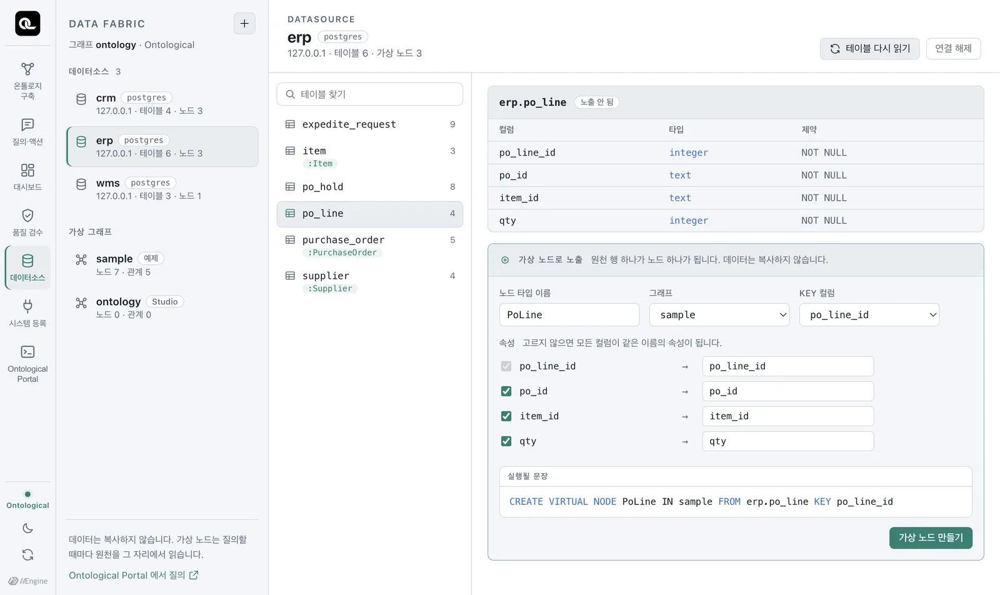
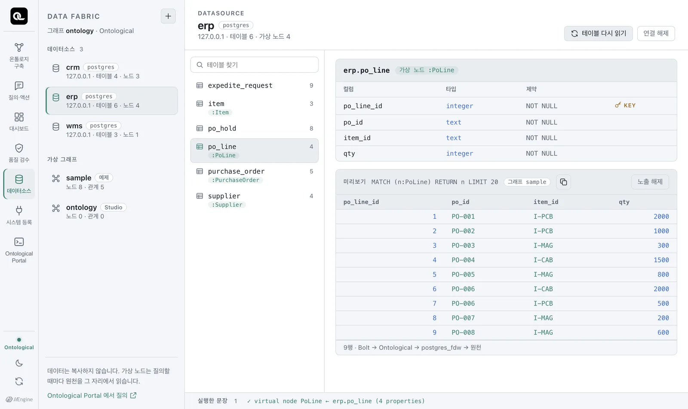
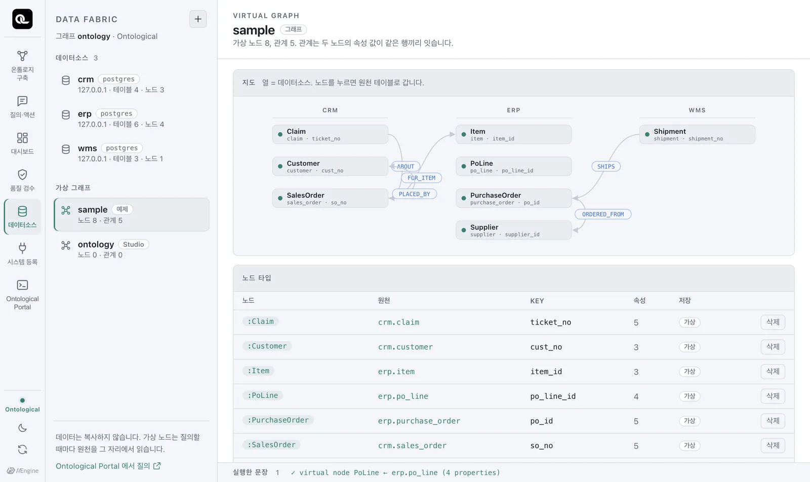
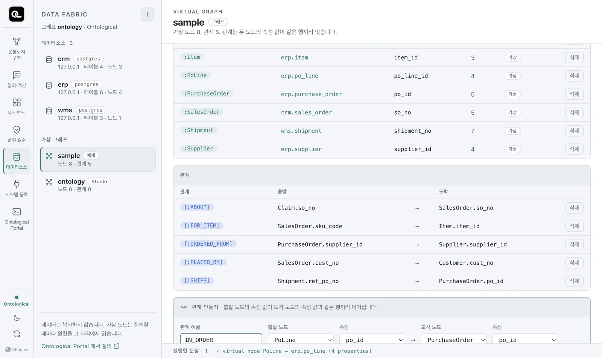
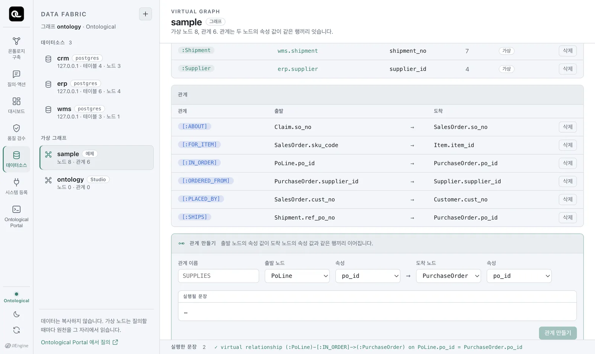

아직 노출되지 않은 테이블
erp.po_line(발주 품목)을 가상 노드로 만들고, 발주·품목과 관계로 이어 봅니다. 서로 다른 데이터베이스의 테이블을 하나의 그래프로 연결하는 과정을 실습합니다.
가상 노드란#
가상 노드 타입은 원천 테이블 하나를 그래프의 노드 타입으로 정의한 것입니다.
- 원천 행 하나 = 노드 하나, 컬럼 = 속성입니다.
- KEY 컬럼이 노드를 구별하는 값입니다(보통 기본키).
- 데이터는 복사되지 않습니다.
MATCH (n:PoLine)을 실행할 때마다 원천erp.po_line을 읽습니다. - 읽기 전용입니다. 가상 노드에
CREATE나SET을 하면 엔진이 거절합니다. 값을 바꾸려면 원천 시스템에서 바꿔야 하고, Ontological Studio에서는 그 일을 액션이 합니다(6부).
따라 하기 — 발주 품목을 노드로#
- 데이터소스 탭에서
erp를 고르고, 테이블 목록에서po_line을 누릅니다. 아직 「노출 안 됨」입니다. - 오른쪽 아래 가상 노드로 노출 상자에서 노드 타입 이름을
PoLine, 그래프를sample, KEY 컬럼을po_line_id로 둡니다. - 속성은 그대로 두면 모든 컬럼이 같은 이름의 속성이 됩니다. 이름을 바꾸고 싶으면 오른쪽 칸을 고칩니다(예:
qty→quantity). - 「실행될 문장」을 확인하고 「가상 노드 만들기」를 누릅니다.

실행되는 문장은 이것입니다.
CREATE VIRTUAL NODE PoLine IN sample FROM erp.po_line KEY po_line_id
속성 이름을 바꾸면 PROPERTIES (po_line_id, po_id, item_id, qty AS quantity)처럼 붙습니다. 만들자마자 미리보기에 원천의 9행이 나옵니다.

가상 그래프 보기#
왼쪽 아래 가상 그래프에서 sample을 누르면, 데이터소스별로 묶인 노드와 관계를 그래프로 볼 수 있습니다. PoLine은 아직 다른 노드와 연결되어 있지 않습니다.

따라 하기 — 관계로 잇기#
발주 품목은 특정 발주에 포함된 특정 품목을 뜻합니다. 이 두 연결을 관계로 정의합니다.
- 가상 그래프 화면 아래 관계 만들기 칸에 관계 이름
IN_ORDER를 적습니다. - 출발 노드
PoLine, 속성po_id→ 도착 노드PurchaseOrder, 속성po_id를 고릅니다. - 「관계 만들기」를 누릅니다.

CREATE VIRTUAL RELATIONSHIP IN_ORDER IN sample FROM PoLine(po_id) TO PurchaseOrder(po_id)
같은 방법으로 품목과도 잇습니다. 이번에는 포털에서 직접 문장을 입력해 봅시다(포털은 7장에서 자세히 다룹니다. 그래프 선택을 sample로 두세요).
CREATE VIRTUAL RELATIONSHIP OF_ITEM IN sample FROM PoLine(item_id) TO Item(item_id)

가상 관계는 데이터를 복사하지 않습니다. 조인 규칙(PoLine.po_id = PurchaseOrder.po_id)을 이름 붙여 저장해 둔 것이고, 질의할 때 그 규칙대로 원천을 조인합니다.
바로 써 보기#
이제 “협력사별로 어떤 품목을 몇 개나 발주했나”를 묻는 질의를 쓸 수 있습니다. 협력사 → 발주 → 발주 품목 → 품목으로 네 노드의 관계를 따라 조회합니다.
MATCH (s:Supplier)<-[:ORDERED_FROM]-(po:PurchaseOrder)<-[:IN_ORDER]-(l:PoLine)-[:OF_ITEM]->(i:Item)
RETURN s.name, i.name, sum(l.qty) AS qty
ORDER BY s.name, i.name
| s.name | i.name | qty |
|---|---|---|
| Hanoi Assembly | PCB 기판 | 500 |
| Hanoi Assembly | 전원 케이블 | 2000 |
| Ningbo Magnetics | 마그넷 코어 | 1000 |
| Shenzhen Goldline PCB | PCB 기판 | 3000 |
| 대성케이블 | 전원 케이블 | 1500 |
| 한빛정밀 | 마그넷 코어 | 900 |
그리고 이번에는 두 시스템에 걸친 질문입니다. “3일 넘게 늦은 선적이 싣고 오는 품목과 그 안전재고는?” — 선적은 WMS에, 발주·발주 품목·품목은 ERP에 있습니다.
MATCH (i:Item)<-[:OF_ITEM]-(l:PoLine)-[:IN_ORDER]->(po:PurchaseOrder)<-[:SHIPS]-(sh:Shipment)
WHERE sh.delay_days > 3
RETURN DISTINCT i.name, i.safety_stock, sh.shipment_no, sh.delay_days
| i.name | i.safety_stock | sh.shipment_no | sh.delay_days |
|---|---|---|---|
| PCB 기판 | 500 | SHP-02 | 7 |
| PCB 기판 | 500 | SHP-03 | 9 |
두 선적 모두 PCB 기판을 싣고 오고 있습니다. 재고 담당자에게 먼저 알려야 할 품목이 나왔습니다.
만든 것을 지우려면#
DROP VIRTUAL RELATIONSHIP OF_ITEM IN sample
DROP VIRTUAL RELATIONSHIP IN_ORDER IN sample
DROP VIRTUAL NODE PoLine IN sample
관계가 이어져 있는 노드는 지울 수 없습니다. 엔진이 virtual relationships still join on 'PoLine' (IN_ORDER, OF_ITEM); drop them first라며 거절하고, 데이터소스 탭은 이 이유를 한국어로 바꿔 보여 줍니다. 관계부터 지우세요. 원천 테이블은 아무 영향을 받지 않습니다.
이어지는 장에서 PoLine을 씁니다
7~9장의 몇몇 예제가 PoLine과 두 관계를 씁니다. 지우지 말고 두세요.
가상 노드에 쓰려고 하면
CREATE (x:Supplier {supplier_id:'S-XX'})처럼 가상 노드 타입에 쓰기를 하면 다음과 같이 거절됩니다.
text
'Supplier' is a virtual node type and read-only: its rows live in "erp"."supplier".
Write to the source system, or MATERIALIZE VIRTUAL NODE Supplier to take a copy
원천 데이터를 고치는 일은 그 데이터의 주인인 업무 시스템이 해야 합니다. 꼭 사본이 필요하면 MATERIALIZE VIRTUAL NODE로 복사본을 만들 수 있지만, 복사한 뒤에는 원천의 변경 사항이 자동으로 반영되지 않습니다.
확인 문제
wms.stock_daily를Stock가상 노드로 만들 수 있을까요? 무엇을 KEY로 삼아야 할지 생각해 보세요.SalesOrder와Item사이의FOR_ITEM관계는 어떤 두 속성을 잇고 있을까요?SHOW VIRTUAL RELATIONSHIPS로 확인하세요.- 위의 “협력사별 품목 발주 수량” 질의를 고쳐서, 미결(
OPEN) 발주만 세어 보세요.
정답 보기
- 이 테이블의 기본키는 (snapshot_date, sku_code, warehouse_cd) 세 컬럼입니다. 그런데
KEY는 컬럼 하나만 받습니다(KEY (a, b, c)는expected the key column오류).KEY sku_code로 두면 만들어지기는 하지만, 같은 품목이 날짜·창고별로 여러 행(10행)이라 노드 하나를 키로 구별할 수 없습니다. 원천에 세 값을 하나로 이은 식별자 컬럼(예: 뷰)을 두는 것이 맞습니다. 데이터 모델링에서 “식별자”가 왜 중요한지 보여 주는 예입니다. SalesOrder.sku_code→Item.item_id. CRM은 품목을sku_code라 부르고 ERP는item_id라 부릅니다.WHERE po.status = 'OPEN'을RETURN앞에 넣습니다.
MATCH (s:Supplier)<-[:ORDERED_FROM]-(po:PurchaseOrder)<-[:IN_ORDER]-(l:PoLine)-[:OF_ITEM]->(i:Item)
WHERE po.status = 'OPEN'
RETURN s.name, i.name, sum(l.qty) AS qty ORDER BY s.name, i.name